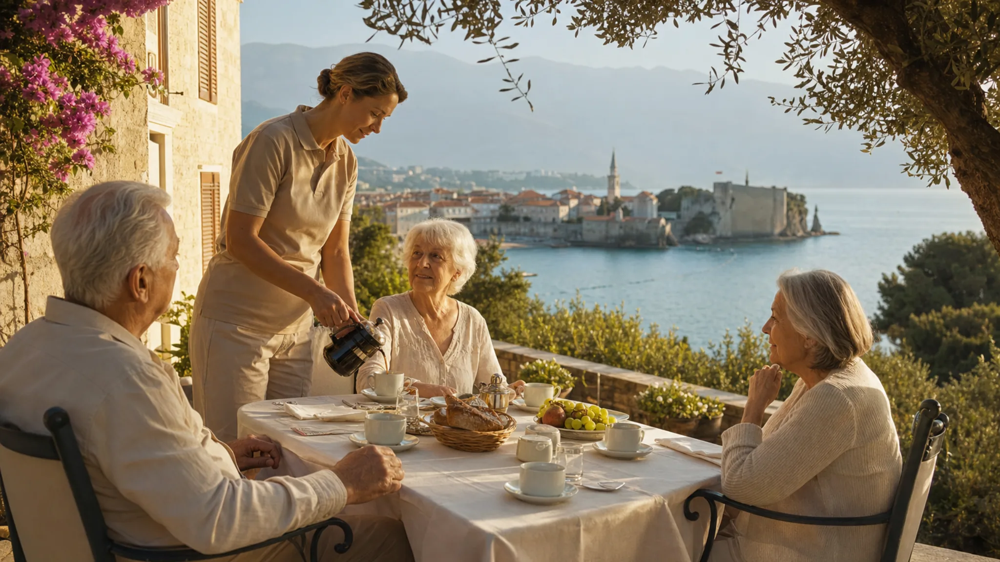
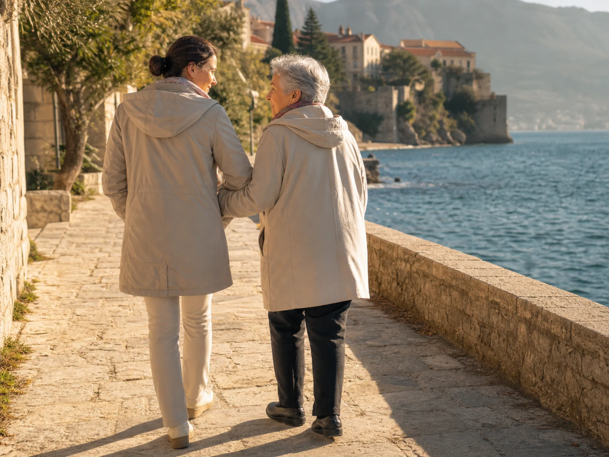
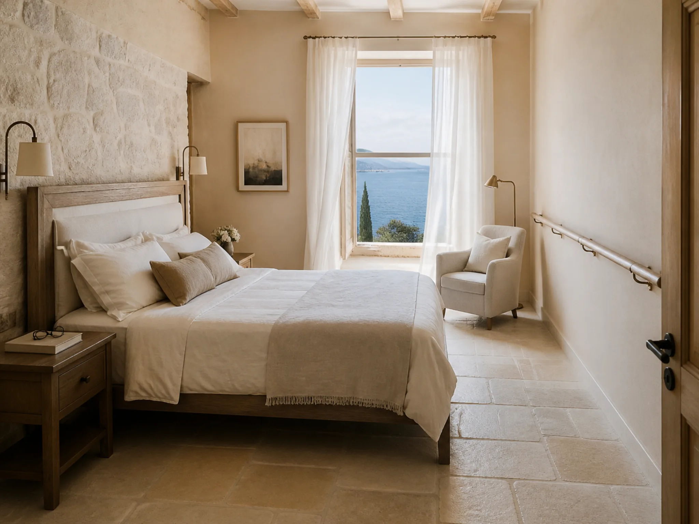
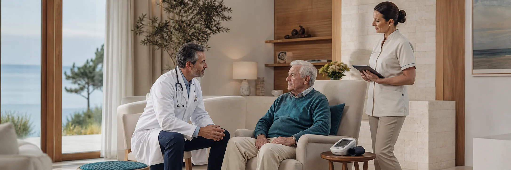
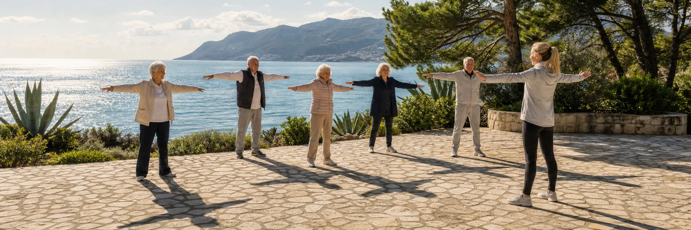

Für Träger und Leitungen stationärer Pflegeeinrichtungen
Adria Care Residenz nimmt Bewohnergruppen europäischer Pflegeeinrichtungen für saisonale Aufenthalte von 4–12 Wochen auf — mit mehrsprachiger Betreuung (Deutsch, Englisch, Französisch, Spanisch, Serbisch, Russisch), lückenloser pflegerischer Übergabe und einer Betriebswirtschaft, die für Ihr Haus rechnet.



Warum jetzt
Ein saisonaler Turnus an der Adria ist kein Urlaubsprodukt. Er ist ein betriebliches Instrument — und ein Verkaufsargument gegenüber Angehörigen, das kein Wettbewerber in Ihrer Region hat.
Ablauf
Wir definieren gemeinsam Gruppengröße, Pflegegrade, Saison und Dauer. Für den Einstieg empfehlen wir einen Pilotturnus von 4 Wochen mit 6–10 Bewohnern.
Ihre Pflegedienstleitung übergibt Pflegeplanung, Medikation und Dokumentation strukturiert an unser Team. Rückfragen klärt eine gemeinsame Videokonferenz vor Abreise.
Tür-zu-Tür-Logistik mit medizinischer Begleitung: Direktflug nach Tivat oder Podgorica mit betreutem Transfer — oder Busreise mit Zwischenübernachtung für Partner aus Österreich, Norditalien und der Region.
Pflege nach übergebener Planung, mehrsprachiges Personal, wöchentlicher Bericht an Ihr Haus und auf Wunsch an Angehörige. Eine Begleitkraft Ihres Hauses wohnt kostenfrei mit.
Vollständige Dokumentation des Aufenthalts geht zurück an Ihre Pflegedienstleitung — inklusive Vitalverlauf, Medikationsänderungen und ärztlicher Befunde. Und jeder Bewohner nimmt ein gedrucktes Fotoalbum seiner Wochen an der Adria mit nach Hause — aufgenommen von unserem Hausfotografen.
Sicherheit
Pflegeplanung, Medikationsplan und Dokumentation werden vor Anreise übernommen und während des Aufenthalts fortgeschrieben — kompatibel mit Ihrer Dokumentationspraxis.
Kooperationsvertrag mit einer Klinik in Budva für Notfälle, wöchentliche hausärztliche Visite in der Residenz, Apothekenversorgung nach europäischen Standards.
Auf Wunsch bleibt der behandelnde Arzt Ihres Hauses per Videovisite eingebunden. Ihre Pflegedienstleitung hat jederzeit Zugriff auf den aktuellen Stand.
Auslandskranken- und Rücktransportversicherung für jeden Bewohner ist im Programmpreis enthalten. Der medizinische Rücktransport ist vertraglich zugesichert.

Wirtschaftlichkeit
Unsere Preise sind an die vollstationären Vollkosten in Deutschland gekoppelt — über einen einfachen Saisonindex. In der Nebensaison, dem Kernfenster der Überwinterung, kostet ein Platz die Hälfte des deutschen Niveaus.
| Pro Bewohner / Monat (Pflegegrad 2) | Vollkosten Deutschland* | Nebensaison Okt.–Apr. · Index 0,50 | Hauptsaison Mai–Sep. · Index 0,90 |
|---|---|---|---|
| Pflege, Unterkunft, Verpflegung, Klimaprogramm | ca. 3.800–4.600 € | ca. 1.900–2.300 € | ca. 3.420–4.140 € |
| An- und Abreise mit Begleitung (einmalig) | — | 380–650 € | |
| Ersparnis pro Bewohner und Monat | — | bis zu 2.300 € | 380–460 € |
*Orientierungswerte für vollstationäre Vollkosten; die genaue Kalkulation erstellen wir auf Basis Ihrer Pflegesätze — der Index wird auf Ihren tatsächlichen Satz angewandt. Hinweis: Leistungen der deutschen Pflegeversicherung sind im Ausland regelmäßig nicht abrufbar — das Programm rechnet sich über die Kostendifferenz, nicht über Kassenleistungen. Details im Angebot.
Saisonprogramme
November – März · Index 0,50
Milde 10–15 °C statt Dauergrau: mehr Tageslicht, weniger Atemwegs- und Gelenkbeschwerden, spürbar bessere Stimmungslage. Unser stärkstes Programm.
April – Juni · September – Oktober · Index 0,50–0,90
Sanfte Aktivierung und Mobilisierung bei 18–24 °C — geeignet für Bewohner nach Krankenhausaufenthalten und für Häuser mit Umbau- oder Urlaubsfenstern.
Juli – August · Index 0,90
Wenn Hitzewellen Ihre Region belasten: klimatisierte Residenz, Morgenprogramm am Wasser, Rückzug in die kühleren Lagen des Hinterlands.

Der Standort
Rund 240 Sonnentage, drei Klimazonen zwischen Meer und Bergen, flache Uferpromenaden und seniorengerechte Ausflüge von der Bucht von Kotor bis zum Skadar-See. Wie sich das Land für Ihre Bewohner anfühlt — mit Temperaturtabelle für alle zwölf Monate — zeigen wir auf einer eigenen Seite.
Häufige Fragen
Die deutsche Pflegeversicherung zahlt stationäre Leistungen im Ausland regelmäßig nicht. Das Programm finanziert sich daher über die Kostendifferenz: Entweder kalkuliert der Träger den Turnus innerhalb seiner bestehenden Sätze und behält die Marge, oder Angehörige buchen den Aufenthalt als Zusatzangebot — in beiden Fällen unter den üblichen Eigenanteilen eines deutschen Heimplatzes.
Die Residenz hat einen Kooperationsvertrag mit einer Klinik in Budva (24/7-Aufnahme), eine Rufbereitschaft vor Ort und für jeden Bewohner eine Auslandskranken- und Rücktransportversicherung. Ihr Haus und die Angehörigen werden im Ereignisfall sofort informiert.
Die Betreuung ist mehrsprachig: Pflegedienstleitung und Schichtleitungen sind deutschsprachig, im Team wird außerdem Englisch, Französisch, Spanisch, Serbisch und Russisch gesprochen. Die Dokumentation führen wir in der Sprache Ihres Hauses. Zusätzlich wohnt eine Begleitkraft Ihres Hauses kostenfrei mit — sie bleibt Vertrauensperson der Gruppe.
Für die meisten Gruppen empfehlen wir den Direktflug nach Tivat oder Podgorica (ab Deutschland 2–2,5 Stunden) mit betreutem Transfer. Die Busvariante mit Zwischenübernachtung bieten wir für regionale Partner an, für die sie die wirtschaftlichere und schonendere Route ist.
Pflegegrade 1–2, reisefähig nach Einschätzung des behandelnden Arztes. Schwere Demenz und intensivpflichtige Bewohner nehmen wir derzeit nicht auf — hier ist Kontinuität der Umgebung wichtiger als jedes Klima.
Mit einem Pilotturnus: 4 Wochen, 6–10 Bewohner, zu Pilotkonditionen, mit Besuch Ihrer Leitung vor Ort vor Vertragsschluss. Danach entscheiden Sie über eine Rahmenvereinbarung.
Angebot anfordern
Nennen Sie uns Eckdaten Ihrer Einrichtung — wir senden Ihnen innerhalb von fünf Werktagen ein konkretes Angebot mit Preisen je Pflegegrad und einem Vorschlag für einen Pilotturnus.